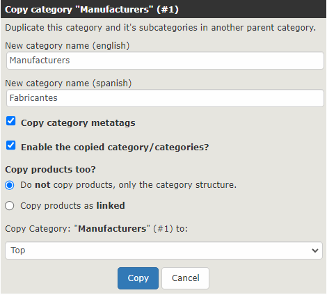

For Zen Cart 1.58/php 8.0+
This plugin adds the (missing) core functionality of Copy Category:

It is multi-language and can optionally copy the category metatags and contained products.
It uses observers so does not require any modifications to core files.
Only two new files are required, using observers to add the Copy Category Icon and Infobox code.
ADMIN_FOLDER\includes\classes\observers\auto.PluginCopyCategories.php
ADMIN_FOLDER\\includes\languages\english\plugin_copy_categories.php
Also included is:
ADMIN_FOLDER\category_product_listing.ZC158a php
This is the current development version and has modifications to the notifiers used by this plugin.
If you are using ZC158 you must compare this file to your version and ensure that the notifiers referenced below have exactly the same structure:
'NOTIFY_ADMIN_PROD_LISTING_DEFAULT_ACTION': This was modified subsequent to the release of ZC158.
'NOTIFY_ADMIN_PROD_LISTING_DEFAULT_INFOBOX': This was added subsequent to the release of ZC158.
This file may be deleted subsequently.
Please report the exact process of replicating any bugs/unexpected behaviour in GitHub: https://github.com/torvista/Zen_Cart-Copy_Categories/issues
29/03/2023: added language flags and comments
08/03/2023: v.2.0 torvista - rewritten to use observers.
11/11/2012: v1.6 knuckle-101 - original plugin. https://www.zen-cart.com/downloads.php?do=file&id=1549